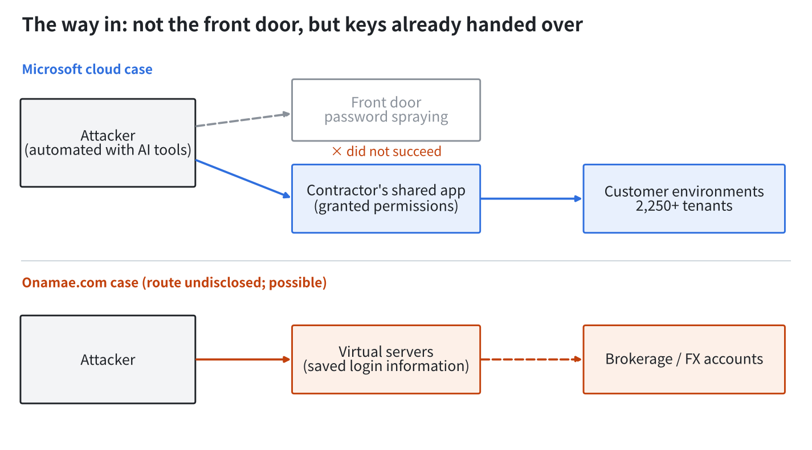
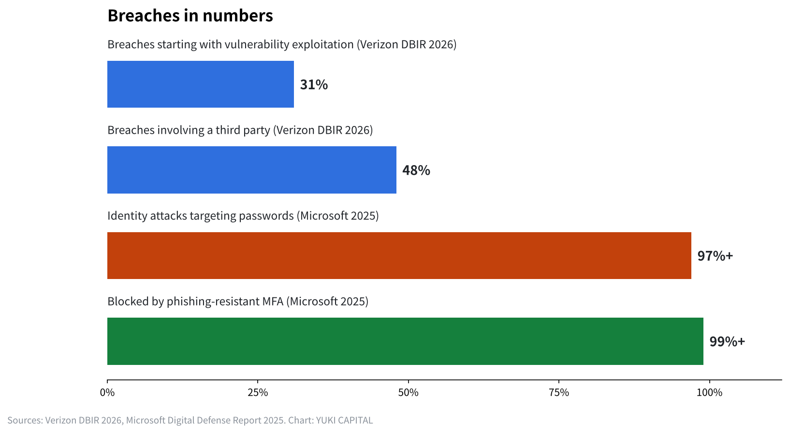

No shield is stronger than a shield: what the Microsoft cloud case and the Onamae.com breach teach about defense and its limits
On October 21 and 22, 2026, two intrusions of completely different scale and target were disclosed in the same week.
One targeted companies that use Microsoft's cloud through a contractor's app; the other was unauthorized access to Onamae.com's virtual servers in Japan.
From Tokyo, I check with primary sources how the attackers got in, how to respond, how large companies defend themselves, and whether this can realistically be prevented.

What happened in the two cases
On October 21, Microsoft disclosed the activity of Storm-0940, a group said to work with the Chinese government. More than 2,250 tenants (the unit of an organization that contracts the cloud) faced 2,900 sign-in attempts per minute. Failed attempts exceeded 151,000. Microsoft states clearly that its own systems were not compromised.
The way in was a contractor's cloud backup app. ConnectWise Cloud Backup (formerly SkyKick), an app shared by many companies, was taken over, and the attackers used the permissions granted to that app to get into customer environments. In some cases, it took less than three hours from targeting to gaining administrator privileges. The attack used ARTEX, a multi-agent AI tool published for penetration testing.
The Onamae.com case occurred in a virtual private server (VPS) service used for things like automated FX trading. GMO began investigating on October 19 after a user inquiry, confirmed a malicious program on the 20th, and stopped all plans from 4 a.m. on the 21st. In its second report on the 22nd, it said it had received reports of unauthorized operations in trading accounts and that login information saved on the servers may have been stolen. The number of servers that may be affected is 26,739, and the route of intrusion has not yet been disclosed. Under the terms of service, compensation applies only to a complete outage of 24 hours or more, capped at one month of the monthly fee.
| Item | Microsoft cloud case | Onamae.com case |
|---|---|---|
| Disclosure | October 21, 2026 (company security blog) | First report Oct 21, second report Oct 22 |
| What was targeted | Permissions of a contractor's shared app | Virtual servers and the login information saved on them |
| Scale | 2,250+ tenants, 2,900 attempts per minute | 26,739 servers possibly affected |
| Core systems breached | No (stated by the company) | Under investigation (route not disclosed) |
| AI involvement | Misuse of the pentest AI tool ARTEX | Not disclosed |
How they got in: the common thread is "keys handed over"
The two cases differ in scale and target, but what was targeted has something in common. The attackers did not break down the front door. They used keys that had already been handed over.
In the Microsoft case, password spraying, which tries passwords across many accounts, took place from October 10 to 14 but did not succeed. The breakthrough was the permissions customers had granted to an app for their work. In the Onamae.com case, the login information for brokerages and FX firms that users had saved on servers for automated trading may have become the entrance to their accounts.
In technical terms, this is called a supply chain compromise. However well a company defends itself, if an outside company it connects to, or an outside system it entrusts data to, is broken, the attackers come in from there. Verizon's 2026 study (DBIR) found that 31% of breaches began with exploitation of vulnerabilities and that a third party was involved in 48% of breaches. In IPA's "10 Major Security Threats 2026" in Japan, the second threat for organizations is attacks targeting the supply chain and contractors.

AI changed the speed of the attacking side
What stands out this time is that AI was used in the attack. ARTEX was originally published as a tool for defenders to find weaknesses in their own systems. It was repurposed for attack and kept making attempts against many tenants at once.
In November 2025, Anthropic also disclosed a case in which its own AI was used for espionage by a group suspected of state involvement. Most of the work was reportedly carried out autonomously by the AI. Once attack steps become automated, attempts repeat at a speed people cannot keep up with.
Meanwhile, the defenders' time has not become shorter. In Mandiant's 2026 report (M-Trends), Mandiant being part of Google, the median time from intrusion to discovery was 14 days. In those two weeks before anyone notices, attackers widen their privileges and take data out. IBM's study puts the average cost of a data breach at $4.44 million in 2025 and $4.99 million in 2026.


How large companies defend themselves
Defense at large companies is not a matter of adding one more piece of software. The way of thinking itself has changed.
The first point is designing on the assumption of intrusion. Zero trust, set out by the US NIST in SP 800-207, does not decide trust by whether a connection is inside or outside the company, and checks every access each time. The Cybersecurity Framework 2.0 of 2024 adds "Govern" to the five functions of Identify, Protect, Detect, Respond and Recover, and asks that defense be treated as a management responsibility.
The second is multi-factor authentication. In 2019, Microsoft stated that multi-factor authentication can block 99.9% of attacks on accounts. Its 2025 report says more than 97% of identity attacks target passwords, and that phishing-resistant multi-factor authentication, such as physical security keys, can block more than 99%. This time too, password spraying did not succeed.
The third is keeping the permissions given to outside companies small and reviewing them regularly. If a business app is left with near-administrator permissions, the moment that app is taken over, the company's whole key ring is handed over at once.
How users and small companies can respond
Small companies cannot spend what large companies spend. Even so, many effective measures depend more on effort than on money.
The response Onamae.com's second report asked for was to change passwords from a device other than the affected server, log off all logged-in devices, check the login history, turn on two-step verification, change reused passwords, and watch out for phishing that exploits the incident. All of these can be done today. IPA also lists not reusing passwords and using multi-factor authentication as basic measures for individuals.
Another important point is to entrust less. Do not keep brokerage login information on servers or in the cloud. When registering as a member, do not fill in items the service works without. Review, once a year, the permissions given to the apps you use for work. What you enter stays with the provider, and if the provider is broken, it leaks regardless of your own defenses.
Can it realistically be prevented?
To put the conclusion first, I believe it cannot be completely prevented. As the saying goes, offense is the best defense: the attacker needs to find one hole, while the defender must close every hole. As AI automates attack attempts, that gap widens further.
However, the size of the damage can be changed. In the Microsoft case too, password spraying did not succeed. Basic defenses worked, at least at the front door. Design on the assumption of intrusion, hand over fewer keys, and have a way to notice early. It is possible to design so that an attack you cannot prevent does not become a fatal wound.
How I see it
No shield is stronger than a shield. So I do not think about defense in terms of how much software I have. What I think about is where to keep information and whom to give keys to.
My shared office member information is not kept in my company's own systems. It is managed in a service from a software company. I have turned on two-step verification for all of my bank and brokerage accounts, and my Nomura Securities account accepts orders by voice over the phone and nowhere else. If trading from the internet is impossible, no one can place orders even if they get in.
I had seen GMO as a company with strong defenses. Even so, it was broken through. That is exactly why companies need to keep spending on cybersecurity, and users need to keep the information they hand over to the minimum. From an investor's point of view, perhaps the companies that hold both the shield and the spear themselves are the ones that are strong at moments like this.
Sources
- Microsoft Security Blog, "Storm-0940 uses ARTEX agentic AI in ConnectWise supply chain compromise" https://www.microsoft.com/en-us/security/blog/2026/10/21/storm-0940-uses-artex-agentic-ai-connectwise-supply-chain-compromise/
- GMO Internet Group, alert (second report) https://group.gmo/info/alert/20261022/
- Onamae.com notice (first report) https://www.onamae.com/news/article/11584
- Onamae.com notice (second report) https://www.onamae.com/news/article/11593
- IPA, "10 Major Security Threats 2026" https://www.ipa.go.jp/security/10threats/10threats2026.html
- Verizon, "Data Breach Investigations Report" https://www.verizon.com/business/resources/reports/dbir/
- Mandiant, "M-Trends" https://cloud.google.com/security/resources/m-trends
- IBM, "Cost of a Data Breach Report" https://www.ibm.com/reports/data-breach
- Anthropic, "Disrupting the first reported AI-orchestrated cyber espionage campaign" https://www.anthropic.com/news/disrupting-AI-espionage
- NIST SP 800-207, "Zero Trust Architecture" https://csrc.nist.gov/pubs/sp/800/207/final
- NIST, "Cybersecurity Framework 2.0" https://www.nist.gov/cyberframework
- Microsoft, "One simple action you can take to prevent 99.9 percent of attacks on your accounts" https://www.microsoft.com/en-us/security/blog/2019/08/20/one-simple-action-you-can-take-to-prevent-99-9-percent-of-account-attacks/
- Onamae.com rental server terms of service https://www.onamae.com/agreement/a_ag/server.html
- IPA, "Secure account management" https://www.ipa.go.jp/security/anshin/measures/account_security.html
- CISA, "Implementing Phishing-Resistant MFA" https://www.cisa.gov/sites/default/files/publications/fact-sheet-implementing-phishing-resistant-mfa-508c.pdf
Photos: FlyD / Scott Rodgerson (Unsplash). Charts by YUKI CAPITAL
I record my daily numbers and decisions on X.